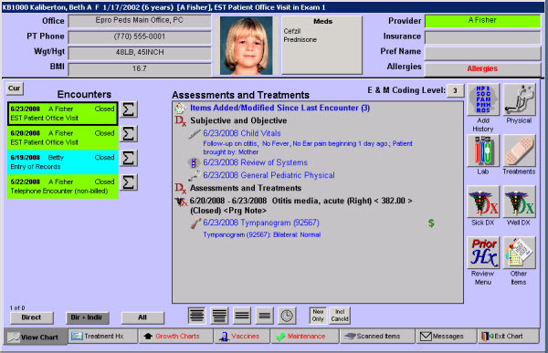

|
Description
This screen allows the provider to review the patient's chart and document the physical, diagnosis, and treatment plan. The Patient Chart screen contains a great deal of information and gives you access to many functions. The Patient Chart screen defaults to display the current or most recent encounter. You can display previous encounters by using the bars on the encounter list shown below.
 NOTE: For Version 4 Users: One of the screens most visibly impacted by version 5 is the Patient's Chart. This screen was often called the SOAP screen in past versions because of the Subjective, Objective, Assessment, and Plan tabs. Those tabs and any tabs that were in the upper portion have been eliminated in version 5. The new Patient Chart is also redesigned to take full advantage of the enlarged screen. NOTE: For Version 4 Users: One of the screens most visibly impacted by version 5 is the Patient's Chart. This screen was often called the SOAP screen in past versions because of the Subjective, Objective, Assessment, and Plan tabs. Those tabs and any tabs that were in the upper portion have been eliminated in version 5. The new Patient Chart is also redesigned to take full advantage of the enlarged screen.
How to Access This Screen
Access this screen by:
- Selecting View Chart from the Patient Demographics screen
- Selecting the View Chart button from the menu available from the Waiting Room, Checkout Room, Treatment Rooms, etc.
Screen Elements
There are several main areas on the Patient Chart:
- Patient Information - This area of the screen is available from all the tabs on the upper portion as well as at the bottom of the screen. It helps the provider determine that the correct patient's chart is displayed and gives a quick view of certain vitals and other information.
- Assessments and Treatments display - The large text area in the middle of the screen. Items that pertain to the current encounter appear in blue. Items that are still open but were documented as part of a previous encounter appear in black with the date ordered. The information can be displayed in the large text area on the Patient Chart screen in four different formats:
- Icon Each open assessment with its corresponding open treatment(s).
- Icon All the open assessments followed by all open treatments. This is the default.
- Icon Only all open assessments. Icon Only all open treatments.
- Icon Everything that occurred in the current visit in chronological order.
- Icon New information only. This is a toggle button. When it is not selected, all open treatments and assessments will display on the SOAP screen (today's data will be displayed in blue and previous data will be displayed in black). When selected, only today's data will be displayed.
- Encounter List - A list of past encounters appears on the left side of the screen. A scroll bar will appear when the list is longer than can be accommodated in this area. Select the icon to the left of a colored bar (There is no icon to the left of the colored bar) to access the Patient Chart for that encounter. Select the sigma button to the right of the colored bar to view the Encounter Summary Report for that encounter. The encounter bar displays the encounter date, visit type, and the provider's name color-coded to the provider who owns' this visit.
- Tabs - the tabs on the Patient Chart will depend on your specialty
- Buttons - a menu of options appears on the right side of the screen. Select Other Items to view the entire menu.
NOTE: Important for Providers: If the encounter bar for the current encounter (at the top of the encounter list) is not your assigned color when you begin the examination task, confirm that you are logged into encounterPRO under your login ID. Check the narrow bar at the top of the screen to see which user is currently logged in. If the nurse or another user is still logged in, select the Exit tab at the bottom right of the screen, then select I'll Be Back to exit the patient's chart. Select the Logout tab on the Office view, then log in with your login ID.
Screen Example

To view the additional tabs of the Patient Chart, select a link from the list below:
 Patient Chart, Treatment HX tab Patient Chart, Treatment HX tab
Patient Chart, Growth Charts tab (only appears for Pediatrics and Family Practice specialties)
Patient Chart, Vaccines tab (only appears for Pediatrics and Family Practice specialties)
Patient Chart, Maintenance tab
Patient Chart, Scanned Items tab
Patient Chart, Messages tab
Patient Chart, Exit tab
Want to Learn More?
Related Solutions
Concept: How encounterPRO Calculates E & M Coding
How to: Review Past Encounters
How to: Search for a Patient
How to: View a Patient's Chart
How to: View/Print Growth Charts
Screen: How to: Evaluate a Patient's Immunization Status
|